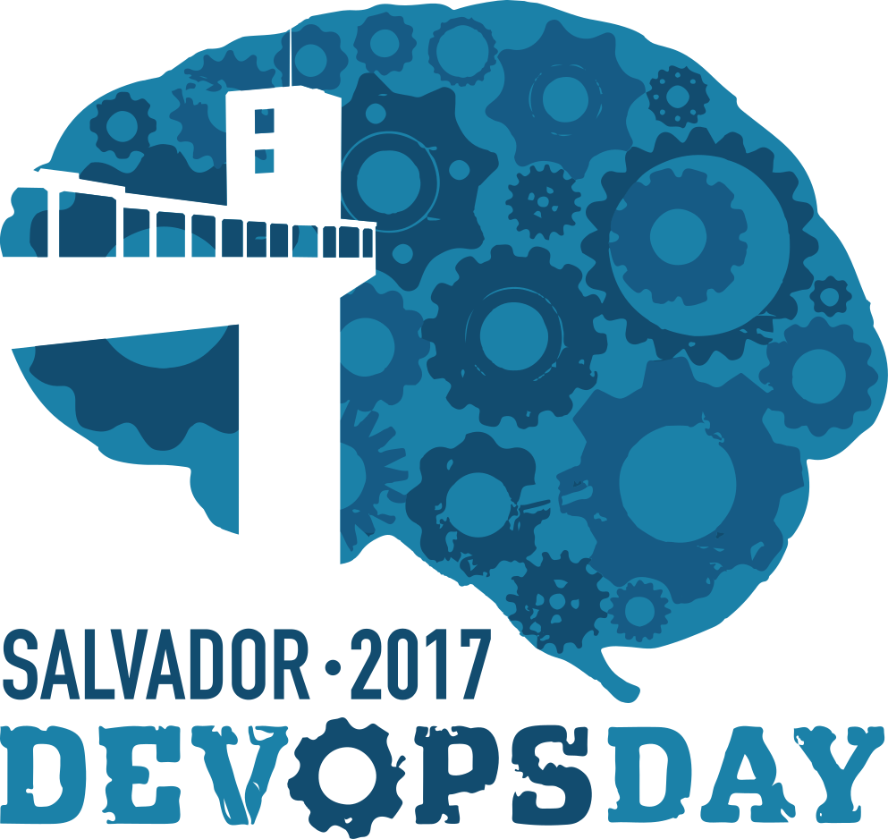

28 de Outubro de 2017
A partir de R$20,00

ThoughtWorks
Mini bio »Na ThoughtWorks desde 2015, interessado em práticas que fomentem a entrega de software com qualidade.

RLXE
Mini bio »Delegado Regional ABPMP Bahia, Integrante do Núcleo de Gestão e Governança de Conteúdo da ABPMP Brasil. CEO da RLXEit. Possui extensas experiências em Projetos com empresas privadas e órgãos publicos nos diversos segmentos (Distribuidora e Transportadora de Combustivel, Constrututora, Tecnologia da Informação etc), além de ministrar treinamentos em BPM.
ThroughtWorks
Mini bio »Trabalha na ThoughtWorks há 5 anos onde atua como desenvolvedor e coach. Parte dessa experiência foi na ThoughtWorks Studios, onde teve como foco fazer a vida de times de desenvolvimento mais fácil por meio de ferramentas de CI/CD. Por isso mesmo, desafios envolvidos em entregar software com qualidade e eficiência são os que mais lhe atraem.

Stone Pagamentos
Mini bio »Soteropolitano, hacker urbano e consultor de infraestrutura

CodeOps
Mini bio »Grande entusiasta Linux, Docker e da cultura DevOps. Palestrante e fundador do canal do Youtube LINUXtips e co-fundador da empresa de consultorias e treinamentos CodeOps. Acumula mais de 15 de experiência como SysAdmin e Production Engineer atuando em grandes empresas como Motorola, Tivit, Locaweb, Walmart.com, Produban, entre outras. Tem grande experiência como instrutor, havendo ministrado treinamentos para mais de 10 mil alunos ao longo de sua carreira nos principais centros de treinamento do Brasil. Autor de um livro, corinthiano, casado, pai de 03 filhos e apaixonado por uma boa cerveja IPA!
SERPRO
Mini bio »Analista de sistemas do Serpro há 12 anos, trabalhando com desenvolvimento de infra há 4 anos, Márcio Albuquerque contará como o Docker ajudou no startup de um grupo heterogêneo e remoto de desenvolvedores da superintendência de operações da empresa.

CodeOps
Mini bio »Arquiteto e Engenheiro de Sistemas, especialista em construção de aplicações e ambientes criticos que necessitam de performance e alta disponibilidade. Combinação de conhecimento técnico que inclui cloud computing, desenvolvimento de software, automação, sistemas operacionais e arquitetura. Um dos responsáveis pela introdução da cultura e ferramentas DevOps na América Latina.

Omnicode Solutions
Mini bio »Maurício Vieira é Engenheiro de Software poliglota, soteropolitano, radicado em São Paulo, curte infraestrutura como código e automação.
Jusbrasil
Mini bio »Engenheiro de Software com 10 anos de experiência em desenvolvimento e infraestrutura de softwares de alta performance e de alta concorrência, Robson Peixoto atualmente trabalha na Jusbrasil, sendo um dos responsáveis por gerenciar a infraestrutura onde rodam os micro-serviços e desenvolvimento backend.

Elastic
Mini bio »Engenheiro de Suporte e Evangelista na Elastic com mais de 5 anos de experiência com Elasticsearch.
EasyTaxi
Mini bio »Conhecido como Boina, Tom e Wsilva entre outros apelidos. Autor do livro Aprendendo Docker, do básico à orquestração de contêineres publicado pela editora Novatec. Co-organizador do meetup de Docker em São Paulo, tem background em telecomunicações, VoIP e Linux. Tem contribuído com suporte em fóruns, grupos de Slack e de Telegram e participando de palestras para as comunidades PHP, Python e Go.
Que tal palestrar no DevOpsDays Salvador? Você pode compartilhar suas idéias, cases, qualquer coisa! Aceitamos palestras de qualquer nível. Maiores informações em breve!
Clique no nome da palestra para ver a sua descrição.
Momento de entrega do material do participante.
Palestrante: Maurício Vieira
Essa será uma introdução sobre ansible, uma solução que automatiza infraestrutura. Essa palestra é para todos os que desejam parar de instalar pacotes e aplicações “na mão”.
slides: 🎥
Palestrante: Jairo Junior
Seus playbooks estão ficando muito complexos? Difíceis de serem idempotentes? Não proveem feedback adequado? Modules podem ser uma melhor alternativa para seu problema. Como melhor entender os modules embutidos no Ansible, contribuir e começar a desenvolver os seus próprios.
Momento para perguntas das palestras de 25 minutos anteriores.
Hora ideal para recarregar as energias e confraternizar com os demais participantes.
Palestrante: Jeferson Fernando e Mateus Prado
Já sabemos que DevOps também é cultura, onde é necessário diversas habilidades que vai além do técnico, mas hoje vamos abordar quais as ferramentas que empresas que já possuem a cultura DevOps utilizam no seu dia-a-dia, seja para seu CI/CD, automação de sua infra e outras ferramentas importantes para aumentar a produtividade de sua equipe e a frequências de entregas.
Palestrante: Claudisjone Ferreira
A integração das areas distintas(Dev e Ops) que possuem fluxo intrafuncional precisam gerir seus processos (BPM) para o novo modelo Devops com processos interfuncionais. Desta maneira, na palestra será abordado explanações dos conceitos de BPM e abordagens dos fluxo de processos em devops. Com explicações dos benefios em gerir processos de um lado Dev(Code, Test e Build) e do outro Ops(deploy, operation e monitoring).
Hora do almoço, precisa dizer mais? :P
Palestrante: Fernando Júnior
DevOps me foi apresentado como a união entre desenvolvimento e operações em favor de uma entrega mais confiável de software.
Como alcançar essa confiança? Através de automação de infraestrutura, testes e implantação, monitoramento, pipelines de entrega… Todas práticas já defendidas nos princípios de Entrega Contínua.
Sendo assim, o que há de novo em DevOps? Em que ele difere das práticas de Entrega Contínua?
Trabalhei em times onde não só praticávamos integração e entrega contínua como também províamos um ambiente para que outros times o fizessem. Sempre nos consideraram o time “DevOps” e isso me incomodava. Muito antes de qualquer rótulo, eram os princípios de Entrega Contínua que nos guiavam.
A curiosidade me levou a tentar entender o movimento além de ferramentas e práticas. O que nos espera nos fundamentos de DevOps?
Momento para perguntas das palestras de 25 minutos anteriores.
Palestrante: Arthur Santos
Quando o produto que desenvolvemos passa a ter usuários em produção, cada mudança problemática diminui a confiança na qualidade do processo de entrega do produto. Em muitos casos, a reação a isso envolve adicionar burocracia e impedimentos para novas implantações, gerando frustração no time de desenvolvimento.
Entrega Contínua é um conjunto de princípios e práticas que ajudam a nutrir um ambiente de experimentação e confiança nas mudanças que estão sendo adicionadas ao produto.
Como podemos avaliar a maturidade na adoção de Entrega Contínua em nossos times, entendendo os principais gargalos pra aumentar a confiança da organização em seu processo de entrega?
Palestrante: Robson Roberto Souza Peixoto
Conheça o casal 20 do monitoramento: Prometheus <3 Granafa! Apresentarei todos os conceitos básicos de como monitorar seus servidores, aplicações e serviços; de como ser alertado quando algo estranho acontecer; de como visualizar os dados e como instrumentar sua aplicação. Apresentarei o mínimo para colocar o Prometheus e Grafana para funcionar no seu projeto.
Momento para perguntas das palestras de 25 minutos anteriores.
Palestrante: Thiago Souza
Logging Analytics e Machine Learning com Elastic Stack
slides
Hora ideal para recarregar as energias e confraternizar com os demais participantes.
Palestrante: Marcio Albuquerque
Como o Docker me ajudou no startup de um grupo heterogêneo e remoto de desenvolvedores
Palestrante: Rafael Gomex (Gomex)
Cansei de trabalho manual, quero automatizar tudo
slides
Momento para perguntas das palestras de 25 minutos anteriores.
Palestrante: Wellington Silve (Boina)
Orquestração de contêineres Docker usando Swarm
slides
Fishbowl é um formato de discussão que permite o livre diálogo entre os participantes do evento sobre um determinado assunto, que pode ou não mudar de acordo com a evolução do diálogo. Clique aqui para maiores informações
| 08:00 - 09:00 | Credenciamento |
| 09:00 - 09:25 | Everybody is in the place?! Let's go! |
| 09:25 - 09:50 | Desenvolvimento de módulos Ansible |
| 09:50 - 10:00 | Perguntas |
| 10:00 - 10:30 | Coffee Break |
| 10:30 - 11:15 | DevOps ToolKit |
| 11:15 - 11:40 | Dev + Process + Ops |
| 12:15 - 13:15 | Almoço |
| 14:00 - 14:25 | Mémoire de um Dev-não-Ops |
| 14:25 - 14:35 | Perguntas |
| 14:35 - 15:00 | Jornada de Maturidade de Entrega Contínua |
| 15:00 - 15:25 | Prometheus e Grafana 101: comece a monitorar suas aplicações, servidores e serviços |
| 15:25 - 15:35 | Perguntas |
| 15:35 - 16:05 | Logging Analytics e Machine Learning com Elastic Stack |
| 16:05 - 16:35 | Coffee Break |
| 16:35 - 17:00 | Docker como ferramenta integradora |
| 17:00 - 17:25 | Cansei de trabalho manual, quero automatizar tudo |
| 17:25 - 17:35 | Perguntas |
| 17:35 - 18:05 | Orquestração de contêineres Docker usando Swarm |
| 18:05 - 18:35 | Fishbowl |
DevOpsDays é dedicado a fornecer uma experiência de conferência livre de assédio para todos, independentemente do sexo, orientação sexual, deficiência, aparência física, tamanho do corpo, raça ou religião. Nós não toleramos o assédio dos participantes da conferência, sob qualquer forma. Linguagem ou imagens sexuais não são adequadas para qualquer local da conferência, principalmente palestras. Os participantes da conferência que violem estas regras podem ser sancionados ou expulsos da conferência sem um reembolso, à critério dos organizadores da conferência.
O assédio inclui comentários ofensivos verbais relacionadas com o gênero, orientação sexual, deficiência, aparência física, tamanho corporal, raça ou religião; liguagem ou imagens sexuais nos espaços públicos; intimidação deliberada; perseguição seguida de fotografia ou gravação assediosa; sustentada interrupção das conversações ou outros eventos; inadequado contato físico e olhar sexual indesejado. Os participantes solicitados a interromper qualquer comportamento de assédio devem cumprir imediatamente.
Expositores em seus espaços reservados, patrocinadores ou fornecedores, parceiros ou atividades similares também estão sujeitos à política anti-assédio. Em particular, os expositores não devem usar imagens, atividades ou outro material de conteúdo sexualizado. Integrantes das diversas equipes (incluindo voluntários) não devem usar roupas/uniformes/vestimenta sexualizados, ou de outra forma criar um ambiente sexualizado.
Se um participante se envolve em comportamento de assédio, os organizadores da conferência podem tomar todas as medidas que considerem adequadas, nomeadamente alertando e/ou expulsando o autor da conferência com nenhum reembolso.
Se você está sendo assediado, ao perceber que alguém está sendo assediado, ou tem quaisquer outras preocupações correlatas, entre em contato com um membro da equipe da conferência imediatamente.
Os organizadores da conferência podem ser identificados por crachás e camisas específicos. Os organizadores da conferência ficarão felizes em ajudar os participantes a contatar a equipe de segurança do local ou agentes da lei local, ou ajudar aqueles que experimentam o assédio para se sentirem seguros durante a conferência. Nós valorizamos a sua participação.
Esperamos que os participantes permaneçam aderentes ao código de conduta em todos os locais de conferência e eventos sociais relacionados com a conferência.
Valor para os primeiros inscritos
Até dia o 06 de Outubro
R$ 40,00
ComprarValor padrão do evento
Entre os dias 07 e 20 de Outubro
R$ 50,00
ComprarValor para a última semana de inscrição
Após o dia 21 de Outubro
R$ 90,00
ComprarEstudante paga metade do valor vigente de ingresso


| Benefícios propostos | Grupos de parceria | |||
|---|---|---|---|---|
| Bronze | Prata | Ouro | Platina | |
| Número máximo de parceiros no grupo | ilimitado | 3 | 2 | 1 |
| Oportunidade de receber agradecimento formal no início de cada seção de apresentação | Não | Sim | Sim | Sim |
| Oportunidade de exibição do logotipo da empresa no site, cartazes e banners (tamanho relativo) | 1/2U | 2/3U | 3/4U | 1U |
| Estande | Não | Não | Sim | Sim |
| Inscrições para o evento | 2 | 4 | 6 | 10 |
| Oportunidade de distribuir panfletos na pasta dos participantes | Não | Não | Liberado | Liberado |
| Divulgação releases nos sites mantidos pela comuniddade referente participação do patrocinador no evento | Não | Não | Liberado | Liberado |
| Cota de participação | R$ 500 | R$ 1000 | R$ 2000 | R$ 5000 |